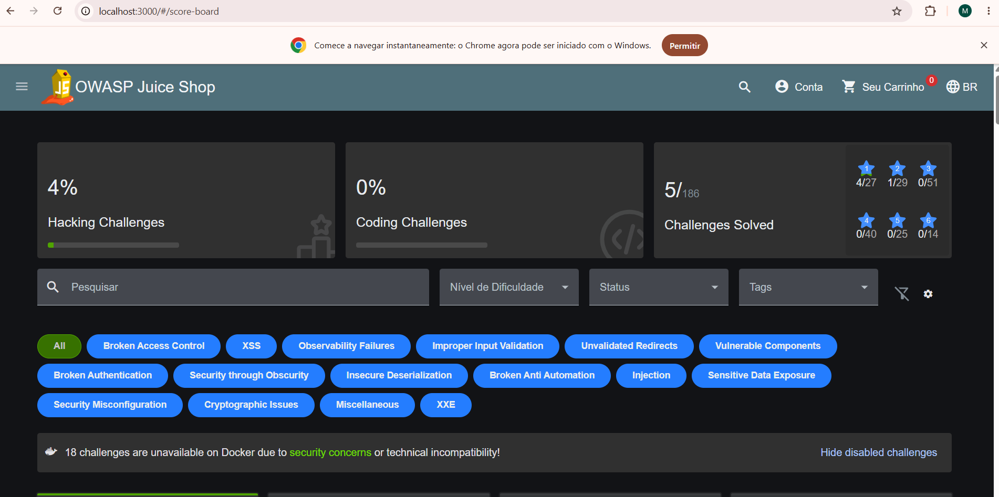
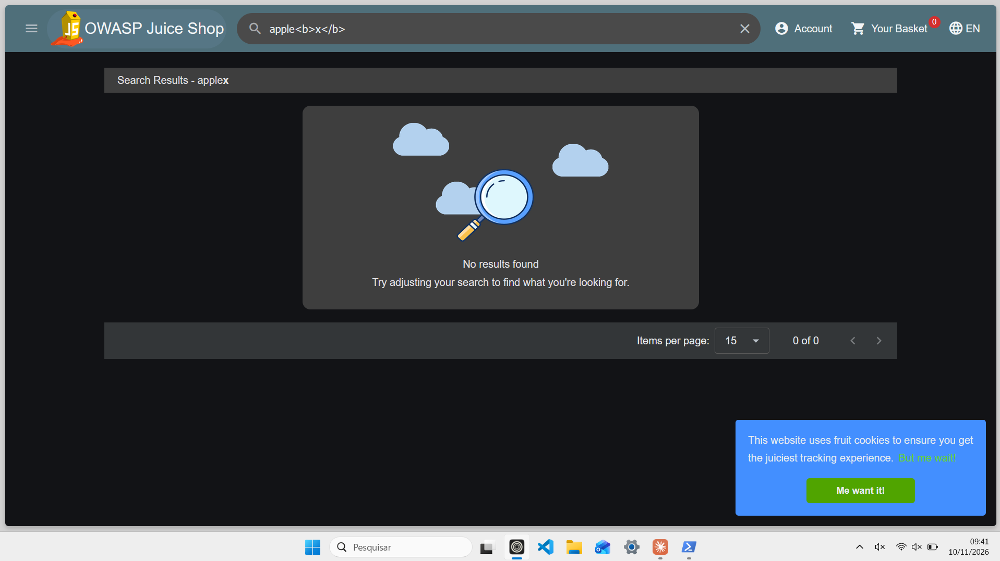

Este relatório descreve o desenvolvimento de um agente supervisionado que integra um modelo de linguagem local (Qwen3 4B, via Ollama) a um conjunto limitado de ferramentas de segurança, usado para investigar a aplicação propositalmente vulnerável OWASP Juice Shop. O objetivo não foi identificar o maior número de vulnerabilidades, mas avaliar em que situações a IA contribui, onde falha e quando a intervenção humana permanece necessária.
Todos os testes ficaram restritos a uma instância local do Juice Shop, rodando no servidor do kit de
laboratório da disciplina. O alvo e o modelo ficam acessíveis apenas em 127.0.0.1; nenhum serviço
externo ou de outro grupo foi alvo. O isolamento foi verificado objetivamente (ver seção 2). Toda conclusão
apresentada remete a evidências registradas em log; uma sugestão do modelo, por si só, não foi tratada
como evidência de vulnerabilidade.
O ambiente roda inteiramente no servidor do kit (discorder, Ubuntu 24.04, 10.0.80.3). O Juice
Shop (Docker, imagem de tag fixa) e o Ollama escutam só em 127.0.0.1; o grupo acessa por VPN + SSH,
e inspeciona a aplicação no navegador por um túnel SSH. Essa topologia garante que o alvo (deliberadamente
vulnerável) e o LLM (sem autenticação) não fiquem expostos na rede compartilhada.
Isolamento verificado: do notebook, pela VPN, as portas do Juice Shop (3000) e do Ollama (11434) recusam conexão; apenas pelo túnel SSH o alvo responde. Um serviço de controle (o WordPress do kit) respondendo no mesmo teste confirma que a VPN estava ativa — isto é, o bloqueio é do alvo, não da rede. Há ainda um procedimento de restauração que recria o container e confirma o estado inicial (zero desafios resolvidos) antes de cada investigação.
O agente é um programa em Python que executa o ciclo: recebe um objetivo → o modelo propõe uma ação (ferramenta + parâmetros + justificativa) → o grupo autoriza, modifica, rejeita ou finaliza → a ferramenta roda sob uma trava de escopo → o resultado volta ao modelo. Cada passo é gravado em JSONL. Três ferramentas foram integradas:
login — autentica com a conta de teste e guarda o token da sessão;http_request — faz requisições ao Juice Shop (interage diretamente com o alvo);dir_enum — testa uma lista pré-definida de caminhos, comparando cada resposta com uma
linha de base para evitar os falsos positivos de uma SPA (que devolve 200 para quase qualquer rota).127.0.0.1. O grupo acessa por VPN + SSH; nada fica exposto na rede.Limites aplicados às ações (requisito do enunciado e decisão de projeto): a trava de escopo fica no código das ferramentas, não apenas no prompt — o alvo e as portas vêm de um arquivo de configuração, e qualquer pedido para outro host/porta é recusado e registrado. O modelo não tem shell livre, e há teto de turnos e de tamanho de resposta. Um conjunto de 16 testes automáticos verifica a trava de escopo.
O planejamento foi feito primeiro sem o apoio do LLM, a partir de uma exploração manual da aplicação (navegador + DevTools), e registrado no repositório antes de qualquer contato com o modelo (a data do commit comprova a ordem). Foram definidas três investigações, uma por tema sugerido no enunciado:
| Investigação | Hipótese | Ferramenta principal |
|---|---|---|
| I1 — Reconhecimento | Existem rotas/recursos que funcionam fora dos menus | dir_enum |
| I2 — Autorização (IDOR) | O servidor entrega um recurso pelo id sem checar o dono | http_request |
| I3 — Tratamento de entradas | A busca reflete a entrada sem tratar HTML (XSS refletido) | http_request |
Depois de registrado, o plano foi submetido ao próprio Qwen para revisão (Fase 3b). O modelo sugeriu, entre outros, ampliar o IDOR a um segundo recurso e investigar XSS armazenado. O grupo aceitou ampliar o IDOR (para verificar se a falha é um padrão) e rejeitou, com justificativa, o uso de scanners automáticos (fogem da proposta de agente supervisionado) e a troca do XSS refletido pelo armazenado (o refletido foi mantido de propósito, por expor um limite do agente — ver seção 5).
| Invest. | Evidência (do log) | Veredito | Papel da IA |
|---|---|---|---|
| I1 | Endpoints fora do menu (ex.: /rest/admin/application-configuration expôs a config interna) | Confirmada | Útil (enumerou sozinha) |
| I2 | Como UserId 25, /rest/basket/1 trouxe o carrinho do UserId 1; /api/Addresss/1 deu 400 (protegido) | Confirmada | Útil, com supervisão |
| I3 | Busca apple<b>x</b> renderizou o x em negrito (XSS na tela) | Confirmada (na tela) | Pouco útil (cega à falha) |
Recebendo apenas o objetivo, o agente escolheu sozinho a dir_enum e, a partir dos resultados,
decidiu inspecionar um achado com http_request. A enumeração revelou endpoints que respondem de
forma distinta da página-padrão da SPA e não aparecem em menu: /ftp, /metrics e,
sobretudo, /rest/admin/application-configuration, que retornou a configuração interna da
aplicação (domínio, parâmetros do servidor, do chatbot, de backup). Soma-se o reconhecimento manual:
/#/score-board acessível e /#/administration com 403, ambos fora do menu. A hipótese
se confirma. A comparação com uma linha de base foi decisiva para separar achados reais dos 200 genéricos da
SPA. Intervenção humana pontual: o modelo chegou a atribuir um resultado ao caminho errado, corrigido pelo grupo.

/#/score-board aberto direto pela URL (sem link no menu): a página do
placar existe e responde. Evidência manual que complementa a enumeração automática do agente.O agente propôs login por conta própria e fez o raciocínio central sozinho: "meu carrinho é o
/rest/basket/6; vou pedir um id diferente". Autenticados como UserId 25, a requisição
GET /rest/basket/1 retornou o carrinho de UserId 1 — dados de outro usuário. O servidor
não verifica a propriedade do recurso: IDOR confirmado. Ampliando para um segundo recurso,
GET /api/Addresss/1 retornou HTTP 400 "Malicious activity detected": esse endpoint tem
proteção. Portanto, o IDOR não é uniforme na aplicação — alguns recursos vazam (carrinho),
outros são barrados (endereços), conclusão mais rica do que "tudo vaza". A supervisão foi necessária em dois
momentos: para obter a evidência de qualidade (o modelo quis concluir a partir de um carrinho vazio) e para
levar a investigação ao segundo recurso (o modelo não o fez sozinho — ver seção 5).
Trecho do log (a resposta real que sustenta a conclusão):
GET /rest/basket/1 → HTTP 200
{"status":"success","data":{"id":1,"UserId":1,
"Products":[{"name":"Apple Juice (1000ml)", ...}]}}
# nosso UserId e 25; o carrinho 1 pertence ao UserId 1 -> acesso indevido (IDOR)
A busca por apple<b>x</b> renderizou, no título dos resultados, o x em
negrito, com as tags consumidas como marcação — evidência de XSS refletido, confirmada no navegador. O ponto
central desta investigação é um limite estrutural do agente: a requisição de API
(/rest/products/search) não reflete o termo na resposta crua, e o http_request só
enxerga essa resposta. Logo, o agente não detecta esta classe de falha, que vive na
renderização da página; a confirmação dependeu inteiramente do humano no navegador. O agente ainda propôs,
repetidamente, uma rota de front-end (/#/products) como se fosse um endpoint de servidor.

apple<b>x</b> renderiza o x em negrito no
título "Search Results": o navegador interpretou a marcação como código. A falha está na renderização, que o
agente (limitado à resposta crua) não enxerga — a confirmação foi humana.Sugestões adequadas e seleção de ferramentas. O modelo foi tecnicamente competente em
tarefas de reconhecimento e no raciocínio de "trocar um identificador": escolheu dir_enum na I1
e login + http_request na I2, de forma coerente com os objetivos. Na I3 a seleção
falhou (confundiu rota de tela com endpoint de API).
Uso dos resultados. A cadeia "resultado → próxima ação" funcionou em passos simples (o resultado da enumeração guiou a inspeção; o id do carrinho guiou o teste de IDOR), mas falhou quando o passo exigia corrigir uma ideia já fixada: em vários turnos o modelo ignorou o resultado novo e repetiu a proposta anterior.
Interpretações incorretas e conclusões sem evidência. Esta foi a limitação mais relevante.
Exemplo concreto: na I2, o modelo quis finalizar afirmando IDOR a partir de /rest/basket/7,
que havia retornado data: null (vazio) — uma conclusão confiante e falsa. O grupo detectou ao
comparar a afirmação com a resposta real no log (não havia carrinho) e lidou com isso forçando
/rest/basket/1, que trouxe a evidência verdadeira. A lição confirma a premissa do enunciado: a
saída de um LLM pequeno pode ser, ao mesmo tempo, confiante e incorreta.
Ações repetitivas. Em I2 e I3 o modelo repetiu propostas idênticas por vários turnos, inclusive após rejeição com orientação; o agente dispõe de um detector de repetição que sinalizou cada caso. Na I2, mesmo instruído a testar um recurso diferente do carrinho, repetiu o carrinho — foi preciso impor o segundo recurso. Este teste foi feito com a integração já corrigida (ver nota abaixo), de modo que a repetição é atribuível ao modelo, não à ferramenta.
Intervenção humana. Foi necessária nas três investigações, de três formas: elevar a qualidade da evidência (I2), dar direção quando o modelo travou (I2, I3) e confirmar o que o agente não enxerga (I3, no navegador).
Comparação plano do grupo × agente. Recebendo só o objetivo, o agente re-derivou sozinho, na I1 e na I2, uma abordagem muito próxima da planejada pelo grupo — o que valida o plano, mas também mostra que, nesses casos, o agente acrescenta pouco além do que o grupo já havia pensado; seu ganho é velocidade no trabalho repetitivo, não ideias novas. Na I3 ele divergiu para pior. A previsão feita pelo grupo antes dos testes (bom desempenho na I2, fraco na I3) confirmou-se.
Nota de honestidade (integração). Duas falhas da ferramenta foram descobertas e corrigidas durante o trabalho, para não contaminar as conclusões sobre o modelo: (i) o agente não permitia "Modificar" uma proposta de finalização, o que, numa primeira tentativa de I2, impediu de impor o segundo recurso; (ii) usávamos um seed fixo, que tornava a saída quase determinística e agravava os loops. Ambas foram corrigidas, e os episódios de repetição analisados acima foram observados depois disso, num teste limpo. Reconhecer que parte do que parecia "limitação da IA" era limitação da nossa integração faz parte da própria análise crítica.
O agente supervisionado participou das decisões técnicas de forma desigual: útil no reconhecimento (I1), útil com supervisão no IDOR (I2) e pouco útil no XSS refletido (I3), onde um limite estrutural o impede de ver a falha. Em todas as investigações, a supervisão humana foi decisiva — para validar evidências, redirecionar o modelo e confirmar o que ele não enxerga. As três investigações resultaram em conclusões sustentadas por evidência de log, incluindo um resultado de nuance (o IDOR que vale no carrinho, mas é barrado nos endereços).
As principais limitações observadas no modelo foram: alucinação/confusão de endpoints, conclusões sem evidência suficiente, fixação em propostas (loops) e não incorporação de feedback. Na integração: o agente só observa a resposta crua (não a renderização) e não informa ao modelo quando uma ação foi modificada pelo grupo. O trabalho confirma que, com um modelo local de 4B, o valor está em um fluxo supervisionado — a IA acelera e sugere, mas a condução, a validação e a responsabilidade pelos experimentos permanecem com os estudantes.